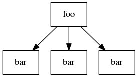
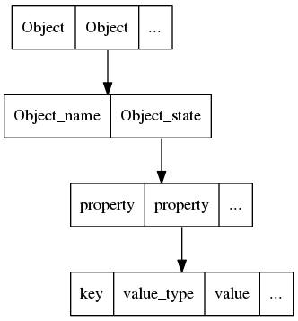

XPathSelect Query Protocol¶
This document defines the protocol used between autopilot and the application under test. In almost all cases, the application under test needs no knowledge of this protocol, since it is handled by one of the UI toolkit specific autopilot drivers (we support both Gtk and Qt). If you are a test author, you should be aware that this document likely contains no useful information for you!
Contents
Who should read this document:
- People wanting to hack on autopilot itself.
- People wanting to hack on xpathselect.
- People wanting to use autopilot to test an application not supported by the current autopilot UI toolkit drivers.
- People wanting to write a new UI toolkit driver.
DBus Interface¶
Every application under test must register itself on a DBus bus. Traditionally this is the DBus session bus, but autopilot supports any DBus bus that the user running autopilot has access to. Applications may choose to us ea well-known connection name, but it is not required.
The only requirement for the DBus connection is that the com.canonical.Autopilot.Introspection interface is presented on exactly one exported object. The interface has two methods:
- GetVersion(). The GetVersion method takes no parameters, and returns a string describing the DBus wire protocol version being used by the application under test. Autopilot will refuse to connect to DBus wire protocol versions that are different than the expected version. The current version string is described later in this document. The version string should be in the format “X.Y”, where X, Y are the major and minor version numbers, respectively.
- GetState(...). The GetState method takes a single string parameter, which is the “XPath Query”. The format of that string parameter, and the return value, are the subject of the rest of this document.
Object Trees¶
Autopilot assumes that the application under test is constructed of a tree of objects. This is true for both Gtk and Qt applications, where the tree usually starts with an “application” object, and roughly follows widget stacking order.
The purpose of the XPathSelect protocol is to allow autopilot to select the parts of the application that it is interested in.
Autopilot passes a query string to the GetState method, and the application replies with the objects selected (if any), and their internal state details.
The object tree is a tree of objects. Objects have several properties that are worth mentioning:
- Each object must have a name that can be used as a python identifier. This is usually the class name or widget type (for example, QPushButton, in a Qt GUI application).
- Each object must have an attribute named “id”, whose value is an integer that is guaranteed to be unique for that object (note however that the same object may appear multiple times in the introspection tree in different places. In this case, the object id must remain consistent between each appearance).
- Objects may have more attributes. Each attribute name must be a string that can be represented as a python variable name. Attribute values can be any type that is representable over dbus.
- Objects may have zero or more child objects.
This tree of objects is known as an “introspection tree” throughout the autopilot documentation.
Selecting Objects¶
Objects in a tree are selected in a very similar fashion to files in a filesystem. The / character is used to separate between levels of the tree.
Selecting the Root Object¶
A shortcut exists for selecting the root object in the introspection tree. A query of / will always return the root object. This is used when autopilot does not yet know the name of, the root object.
Absolute Queries¶
Absolute queries specify the entire path to the object, or objects autopilot is interested in. They must start with / and specify object names, separated by / characters. For example:
| Query: | Selects: |
|---|---|
| / | The root object (see above). |
| /foo | The root object, which must be named ‘foo’. |
| /foo/bar | Object ‘bar’, which is a direct child of the root object ‘foo’. |
Using absolute queries, it is possible to select nodes in a tree of objects. However, there is no requirement for an absolute query path to match to exactly one object in the tree. For example, given a tree that looks like this:

a query of /foo/bar will select two objects. This is allowed, but not always what we want. There are several ways to avoid this, they will be covered later in this document.
Relative Queries¶
Absolute queries are very fast for the application under test to process, and are used whenever autopilot knows where the object it wants to look at exists within the introspection tree. However, sometimes we need to be able to retrieve all the objects of a certain type within the tree. XPathSelect understands relative queries, which will select objects of a specified type anywhere in the tree. For example:
| Query: | Selects: |
|---|---|
| //foo | All objects named ‘foo’, anywhere in the tree. |
Relative queries are much slower for the application under test to process, since the entire introspection tree must be searched for the objects that match the search criteria. Additionally, relative queries can generate a large amount of data that has to be sent across DBus, which can slow things down further.
Mixed Queries¶
Absolute and relative queries can be mixed. All the relative queries in the above table will search the entire object tree. However, sometimes you only want to search part of the object tree, in which case you can use a mixed query:
| Query: | Selects: |
|---|---|
| /foo/bar//baz | Select all objects named ‘baz’ which are in the tree beneath ‘/foo/bar’ |
| /foo/far//bar/baz | Select all ‘baz’ objects which are immeadiate children of a ‘bar’ object, which itself is in the subtree beneath ‘/foo/far’. |
As you can see, mixed queries can get reasonably complicated.
Attribute Queries¶
Sometimes we want to select an object whose attributes match certain values. For example, if the application under test is a Qt application, we may want to retrieve a list of ‘QPushButton’ objects whose ‘active’ attribute is set to True.
The XPathSelect query protocol supports three value types for attributes:
- Boolean attribute values are represented as True or False.
- String attribute values are represented as strings inside double quote characters. The XPathSelect library understands the common character escape codes, as well as the \x__ hexidecimal escape sequence (For exmaple: "\x41" would evaluate to a string with a single character ‘A’.).
- Integer attribute values are supported. Integers may use a sign (either ‘+’ or ‘-‘). The sign may be omitted for positive numbers. The range for integer values is from to
.
Attribute queries are done inside square brackets ([...]) next to the object they apply to. The following table lists a number of attribute queries, as examples of what can be achieved.
| Query: | Selects: |
|---|---|
| //QPushButton[active=True] | Select all QPushbutton objects whose “active” attribute is set to True. |
| //QPushButton[label="Deploy Robots!"] | Select all QPushButton objects whose labels are set to the string “Deploy Robots”. |
| //QPushButton[label="Deploy Robots!",active=True] | Select all QPushButton objects whose labels are set to the string “Deploy Robots”, and whose “active” attribute is set to True. |
| //QSpinBox[value=-10] | Select all QSpinBox objects whose value attribute is set to -10. |
Note
While the XPathSelect protocol has a fairly limited list of supported types for attribute matching queries, it is important to note that autopilot transparently supports matching object attributes of any type. Autopilot will send attribute filters to the application under test using the XPathSelect protocol only if the attribute filters are supported by XPathSelect. In all other cases, the filtering will be done within autopilot. At worst, the test author may notice that some queries take longer than others.
Wildcard Nodes¶
As well as selecting a node in the introspection tree by node name, one can also use * to select any node. However, there are a few restrictions on this feature, to stop the inadvertent selection of the entire tree.
Selecting All Children¶
Wildcard nodes are often used to select all the children of a particular object. For example, if the query /path/to/object[id=123] returns the parent object you are interested in, then the query /path/to/object[id=123]/* will return all the immediate children of that object.
Selecting Nodes based on Attributes¶
The second use of wildcard nodes is to select nodes based purely on their attributes, rather than their type. For example, to select every object with a ‘visible’ property set to ‘True’, the following query will work: //*[visible=True]. However, care must be taken - this query will traverse the entire introspection tree, and may take a long time. Additionally, a large amount of data may be returned over DBus.
Invalid Wildcard Queries¶
The wildcard specifier may only be used after a search separator if you have also specified attribute filters. For example, all the following queries are invalid:
Invalid Queries
- //*
- /path/to/some/node//*
- //node//*
However, the following queries are all valid:
Valid Queries
- //node/*
- /node//*[key="value"]
- //node//*[key=True]
Returning State Data¶
Once the application under test has parsed the XPathSleect query, and has a list (possibly empty!) of objects that match the given query, it must serialize those objects back across DBus as the return value from the GetState method. The data structure used is reasonably complex, and is described below:
- At the top level, the return type must be an array of objects. Each item in the array represents an object that matched the supplied query. If no objects matched the supplied query, an empty array must be returned.
Each object is a DBus structure that has two parts: a string, and a map. The string specifies the full tree path to the object being returned (for example “/path/to/object”).
- The map represents the object state, and is a map of strings to arrays. The keys in this map are property names (for example “visible”).
- The arrays represents the property value. It contains at least two parts, a value type id (see below for a list of these ids and what they mean), and one or more values. The values can be any type representable over dbus. Some values may actually be arrays of values, for example.

Valid IDs¶
The following table lists the various type Ids, and their meaning.
| Type ID: | Meaning: |
|---|---|
| 0 | Simple Type. The value is a DBus integer, boolean, or string, and that is exactly how it should be represented to the user. |
| 1 | Rectangle. The next four values are all integers, and represent a rectangle in cartesian space. The four numbers must represent the x, y, width and height of the rectangle, respectively. Autopilot will likely present the four values as ‘x’, ‘y’, ‘w’ and ‘h’ to test authors. Autopilot makes no assumptions about the coordinate space used. |
| 2 | Point. The next two values are integers, and represent an X, Y, point in catesian space. |
| 3 | Size. The next two value are integers, and represent a width,height pair, describing a size in catesian space. |
| 4 | Color. The next four values are all integers, and represent the red, green, blue, and alpha components of the color, respectively. Each component is bounded between 0 and 255. |
| 5 | Date or Date/Time. The next value is an integer representing the number of seconds since the unix epoch (1970-01-011 00:00:00), UTC time. |
| 6 | Time. The next values are all integers, and represent hours, minutes, seconds, milliseconds. |
| 7 | 3D Point. The next values are all integers, and represent the X, Y and Z coordinates of a point in 3D cartesian space. |
Special Attributes¶
Most attributes that are returned will be attributes of the UI toolkit class itself. However, there are two special attributes:
- The id attribute must be present, and must contain an integer number. This number must be unique for this instance of the object. This number must also be within the range suitable for integer parameter matching.
- The Children attribute may be present if the object being serialized has any children in the introspection tree. If it is present, it must be an array of strings, where each string is the class name of the immediate child object.
- The globalRect property should be present for any components that have an on-screen presence. It should be a 4-element array containing the x,y,w,h values of the items on-screen coordinates. Note that these coordinates should be in screen-space, rather than local application space.
Example GetState Return Values¶
All the examples in this section have had whitespace added to make them more readable.
Example 1: Unity Shell
Query: /
Return Value:
[
(
'/Unity',
{
'id': [0, 0],
'Children': [0,
[
'DashController',
'HudController',
'LauncherController',
'PanelController',
'Screen',
'SessionController',
'ShortcutController',
'SwitcherController',
'WindowManager'
]
]
}
)
]
Example 2: Qt Creator Menu
This is a much larger object, and shows the globalRect attribute.
Query: /QtCreator/QMenu[objectName="Project.Menu.Session"]
Return Value:
[
(
'/QtCreator/QMenu',
{
'_autopilot_id': [0, 3],
'acceptDrops': [0, False],
'accessibleDescription': [0, ''],
'accessibleName': [0, ''],
'autoFillBackground': [0, False],
'baseSize': [3, 0, 0],
'Children': [0, ['QAction', 'DBusMenu']],
'childrenRect': [1, 0, 0, 0, 0],
'contextMenuPolicy': [0, 1],
'enabled': [0, True],
'focus': [0, False],
'focusPolicy': [0, 0],
'frameGeometry': [1, 0, 0, 100, 30],
'frameSize': [3, 100, 30],
'fullScreen': [0, False],
'geometry': [1, 0, 0, 100, 30],
'globalRect': [1, 0, 0, 100, 30],
'height': [0, 30],
'id': [0, 3],
'inputMethodHints': [0, 0],
'isActiveWindow': [0, False],
'layoutDirection': [0, 0],
'maximized': [0, False],
'maximumHeight': [0, 16777215],
'maximumSize': [3, 16777215, 16777215],
'maximumWidth': [0, 16777215],
'minimized': [0, False],
'minimumHeight': [0, 0],
'minimumSize': [3, 0, 0],
'minimumSizeHint': [3, -1, -1],
'minimumWidth': [0, 0],
'modal': [0, False],
'mouseTracking': [0, True],
'normalGeometry': [1, 0, 0, 0, 0],
'objectName': [0, 'ProjectExplorer.Menu.Debug'],
'pos': [2, 0, 0],
'rect': [1, 0, 0, 100, 30],
'separatorsCollapsible': [0, True],
'size': [3, 100, 30],
'sizeHint': [3, 293, 350],
'sizeIncrement': [3, 0, 0],
'statusTip': [0, ''],
'styleSheet': [0, ''],
'tearOffEnabled': [0, False],
'title': [0, '&Debug'],
'toolTip': [0, ''],
'updatesEnabled': [0, True],
'visible': [0, False],
'whatsThis': [0, ''],
'width': [0, 100],
'windowFilePath': [0, ''],
'windowIconText': [0, ''],
'windowModality': [0, 0],
'windowModified': [0, False],
'windowOpacity': [0, 1.0],
'windowTitle': [0, ''],
'x': [0, 0],
'y': [0, 0]
}
)
]
Note that most attributes are given the “plain” type id of 0, but some (such as ‘pos’, ‘globalRect’, and ‘size’ in the above example) are given more specific type ids.